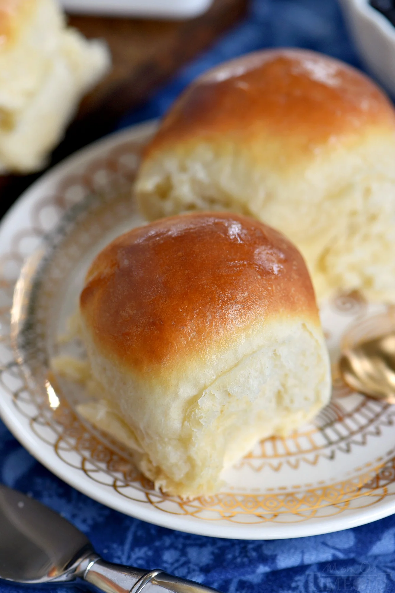

Home
Rolls

Description
Homemade buttery dinner rolls, perfect to make as a side for any occasion!
Ingredients
- 4-5 cups all purpose flour
- 2 tablespoons rapid rise (instant yeast)
- ⅓ cup granulated sugar
- 1 tsp salt
- 1½ cups warm milk , 110 degrees
- 5 tablespoons butter, softened
- 1 egg , room temperature
- 2 tablespoons melted butter
Steps
- Combine 3 cups of flour, yeast, sugar, salt, warm milk, butter, and egg in the bowl of a stand mixer.
- Attach the dough hook and turn the mixer on to the lowest speed and mix until flour is incorporated, scraping down the sides of the bowl as necessary.
- Increase speed to medium and beat for 2 minutes.
- Add 1/2 cup flour and blend with the dough hook until incorporated. And another 1/2 cup flour and repeat, mixing at medium speed for another 2 minutes until a ball of dough is formed.
- Add additional flour as necessary. The dough should be slightly sticky and soft and pulling away from the edge of the bowl.
- Transfer the dough to a lightly greased bowl and cover with a towel or plastic wrap. Let rise for 30 minutes at room temperature.
- Remove the towel or plastic wrap and deflate the dough by punching down lightly.
- Pinch off pieces of the dough and form 24 rolls. You can weigh them to keep the rolls close to the same size. Mine were about 2 ounces each but this will vary depending on how much flour you added.
- Transfer the rolls to a lightly greased quarter baking sheet or 9 x 13 baking dish. Cover with a towel or plastic wrap and let rise for an additional 30 minutes at room temperature.
- Preheat oven to 375 degrees. Bake the rolls for 12 to 15 minutes or until golden brown and cooked through. If the rolls are getting too brown, just tent the rolls with foil.
- Remove rolls and brush hot rolls with the melted butter. Serve immediately or store cooled rolls in a plastic bag for up to 3 days.